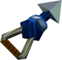
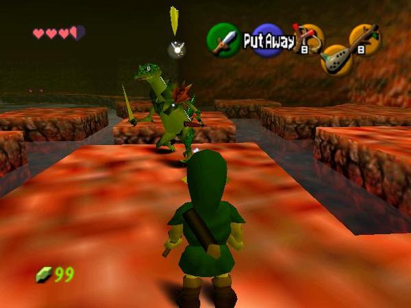

You're Link, a hero on a gnarly quest to save Hyrule and stop the wicked Ganondorf.
You'll time-travel between being a kid and a grown-up, using the Ocarina to unlock the flow of time.
Battle through dungeons, solve mind-bending puzzles, and cruise across a massive, epic Hyrule.
It's a total quest of courage with some rad tunes and killer swordplay!
Some CharactersLinkShiek Impa |
Evil CharactersKing GohmaMorpha Ganon |
Some EquipmentMaster SwordWhen Young Link yanks the Master Sword from the block, he zaps seven years into the future, becoming Adult Link. Stashing it back sends him to his kiddo days. This sword is only for Adult Link and it's a mega upgrade from the Kokiri Sword. It's the key to laying the smackdown on Ganondorf! Hookshot  The Hookshot is like Link's rad grappling hook. It latches onto far-out wooden stuff, like crates, certain trees, and those black target things, then zips Link right over. Plus, it's wicked for zapping enemies and putting 'em on pause. Totally a cool tool for those tricky spots and battles! Fairy Ocarina The Fairy Ocarina is Link's ticket to some mystical music magic. He learns and jams out tunes he finds on his epic quest, with Zelda's Lullaby being the first rad track. It's like Link's got this magical mixtape to help him out on his totally awesome adventure! |
|  |